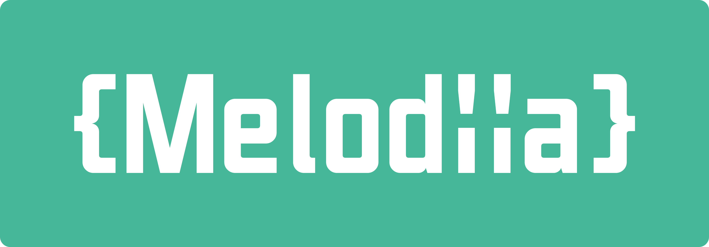

Melodiia

Finally some competitor to ApiPlatform.

Melodiia has been designed to do exactly what you want it does. No magic here. It's just a set of tools that work nicely with Symfony.
Features
- Adds a documentation endpoint with help of swagger
- Set of api responses
- Uses Symfony Form as input
- CRUD controllers
- Error management
- Output format as json-api, a format that has 1.x version
Learn more in the complete documentation.
Install
composer require swag-industries/melodiiaThe recipe will automatically create the configuration file melodiia.yaml. If you decided to not execute this recipe,
please refer to the
recipe repository of Symfony.
You may want to read the getting started doc at this point!
One last thing
I (Nek-) designed Melodiia while I was working at Biig in the mean time. This presentation of Melodiia @Biig-io is related to an old version of Melodiia but can still helps you to understand what is melodiia and how it's different from API Platform (TL;DR: Melodiia does less).
Feel free to open an issue, if you encounter problems while implementing Melodiia.
FAQ
Blank page on documentation
You probably forget to install assets. bin/console assets:install.